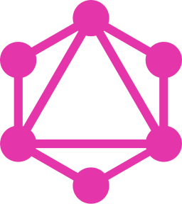

Open to remote roles
engineer
3 years of React, Node.js and PostgreSQL in production. Now NestJS on AWS and LangGraph pipelines.
LLM schema mapping for hospital data
A FastAPI and LangGraph pipeline maps a legacy system's columns onto a 40-table schema, one step at a time. A person approves each mapping in the Next.js review screen. See the stack
- PTpatient_mstpatientsTo review14
- VSpat_visitencountersTo review22
- DRdoc_mstpractitionersTo review11
- BHbill_hdrinvoicesTo review17
- BDbill_dtlinvoice_linesTo review9
- WDward_mstwardsApproved6
- BDbed_mstbedsApproved8
- LOlab_ordlab_ordersApproved13
- RXrx_hdrprescriptionsApproved10
- ASappt_schappointmentsApproved12
migration/run-12/
mappings/patients.sql
+3+4−2−3
@@ -1,12 +1,13 @@ patient_mst → patients
11INSERT INTO patients (id, full_name, date_of_birth, phone)
22SELECT
33 pat_id,
4 pat_fnm || ' ' || pat_lnm,
4 TRIM(pat_fnm || ' ' || pat_lnm),
55 pat_dob,
5 TO_DATE(pat_dob, 'DDMMYYYY'),
LG
LangGraph step 3
now
Approved
pat_dob is text in DDMMYYYY. Parse it with TO_DATE.66 pat_mob
7FROM patient_mst;
7FROM patient_mst
8WHERE pat_del_flg = 'N';
89
910INSERT INTO patient_contacts (patient_id, kind, value)
1011SELECT pat_id, 'email', pat_eml
1112FROM patient_mst
1213WHERE pat_eml IS NOT NULL;
14 NestJS services on one Fargate task
A hospital platform for appointments, records, billing, wards and video consults. One Postgres with a schema per service, reached through API Gateway and a VPC Link, so there is no load balancer to pay for.
Live dashboards for 1,000+ vehicles
At Taabi Mobility, IoT data flows through Node.js and Apollo GraphQL into React views.
- API time down 30% after query tuning
- Page load down 40% with code splitting
- Deploys 2× faster on GitHub Actions
Dashboard page loadAfter code splitting
−40%heavy views lazy-loaded
Experience since 2022
- Full Stack DeveloperTaabi Mobility (CEAT). Excellence in execution award, 2026Jul 2025 to now
- Freelance AI and cloud systemsA hospital platform and an LLM data migration, remoteMay 2026 to now
- Frontend EngineerTaabi Mobility, BengaluruAug 2024 to Jun 2025
- Frontend EngineerHealink, remoteSep 2023 to Aug 2024
- Freelance web developerSelf-employed, remoteNov 2022 to Feb 2023
- Frontend Developer InternVisa2fly, remoteFeb to Sep 2022
- MCA and BCASikkim Manipal University, CGPA 9.0; Presidency University2021 to 2026
Tools I ship with
React and Node.js every day since 2022. AWS, Terraform and LangGraph on the freelance systems.
 React
React Next.js
Next.js TypeScript
TypeScript Redux
Redux Tailwind
Tailwind
GraphQL Node.js
Node.js NestJS
NestJS Python
Python FastAPI
FastAPI PostgreSQL
PostgreSQL Prisma
Prisma MongoDB
MongoDB AWS
AWS Terraform
Terraform Docker
Docker GitHub Actions
GitHub Actions- LangChain
 OpenAI
OpenAI Anthropic
Anthropic Gemini
Gemini- Zoom SDK
 Apollo
Apollo- ECS Fargate